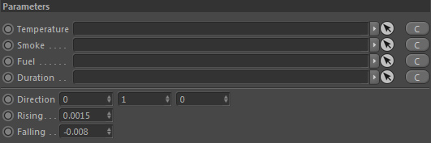

Parameters
Parameters

Temperature
Takes a scalar channel, preferably containing temperature values to create a buoyant force.
Smoke
Takes a scalar channel, preferably containing smoke values. This channel is optional.
Fuel
Takes a scalar channel, preferably a fuel channel or containing fuel values. This channel is optional.
Duration

Takes a Duration node in order to define the length of the force emission.
Direction
Here you can manually set the direction of the resulting force. By default and probably most of the time used is the Y-Axis
Rising

Defines the rising strength. Depends on the temperature values available.
Falling
Defines the falling strength counteracting the Rising strength. Depends on the smoke and fuel values.